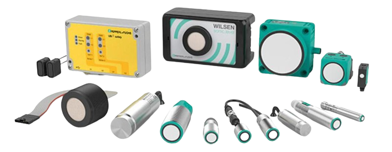

Sensoriamento na Indústria 4.0
Descubra como os sensores permitem a aquisição de dados, o monitoramento de processos e a automação inteligente dentro da Indústria 4.0.
Introdução
Sensores são essenciais para transformar informações do mundo físico em dados digitais, permitindo automação, controle e tomada de decisões.

O que é Sensoriamento?
Sensoriamento é o processo de aquisição de grandezas físicas, químicas ou biológicas por meio de dispositivos chamados sensores.
Esses dispositivos convertem as grandezas detectadas em sinais elétricos, que podem ser analógicos ou digitais, permitindo que sistemas computacionais processem, armazenem e utilizem essas informações.
Grandezas monitoradas
Os sensores podem ser utilizados para detectar diferentes tipos de grandezas presentes em ambientes industriais. Entre as principais estão:
- Temperatura
- Pressão
- Luminosidade
- Umidade
- Gases
- Movimento
Sensores e dados
Após realizar a medição, o sensor transforma a informação obtida em um sinal que pode ser enviado para um sistema de controle ou processamento.
Dessa maneira, informações do ambiente físico podem ser transformadas em dados digitais utilizados para monitoramento, controle e tomada de decisões.
Sensoriamento e IoT
Os sensores possuem papel fundamental na Internet das Coisas (IoT), pois são responsáveis por coletar informações do ambiente e disponibilizá-las para sistemas conectados.
Com isso, equipamentos podem ser monitorados remotamente e os dados coletados podem ser utilizados para automatizar processos.
Importância do Sensoriamento
Os sensores são fundamentais para a digitalização dos processos industriais, permitindo que máquinas e sistemas obtenham informações do ambiente em tempo real.
Acompanhamento contínuo das condições dos processos.
Dados dos sensores podem ser utilizados para automatizar ações e controles.
Sensores permitem conectar equipamentos e sistemas dentro de redes inteligentes.
Identifica falhas antes que aconteçam.
Maior eficiência dos processos.
Otimização das operações industriais.
Integração: Sensor + Controle + Comunicação
Em sistemas de automação e Indústria 4.0, o sensor normalmente faz parte de uma arquitetura que conecta aquisição de dados, processamento e execução de ações.
Protocolos de comunicação
| Protocolo | Aplicação | Característica |
|---|---|---|
| I2C | Componentes | Duas linhas |
| SPI | Periféricos | Alta velocidade |
| UART | Serial | Simples |
| Wi-Fi / Bluetooth | IoT | Sem fio |
| 4–20 mA | Industrial | Padrão robusto |
Arduino: Visão Técnica
O Arduino é uma plataforma de prototipagem baseada em microcontroladores, utilizada para leitura de sensores, processamento e controle de dispositivos.
Recebe dados do ambiente
Interpreta dados
Atua sobre o sistema
Componentes do Arduino
| Componente | Função |
|---|---|
| Microcontrolador | Processamento |
| Entradas analógicas | Leitura de sensores |
| GPIO | Entradas e saídas digitais |
Importância dos sensores
Os sensores permitem que sistemas computacionais obtenham informações do mundo físico para monitorar e controlar processos.
Na Indústria 4.0, isso permite integração entre máquinas, redes e sistemas inteligentes.
Do dado à ação
- Medição
- Processamento
- Transmissão
- Ação